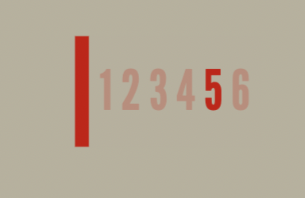
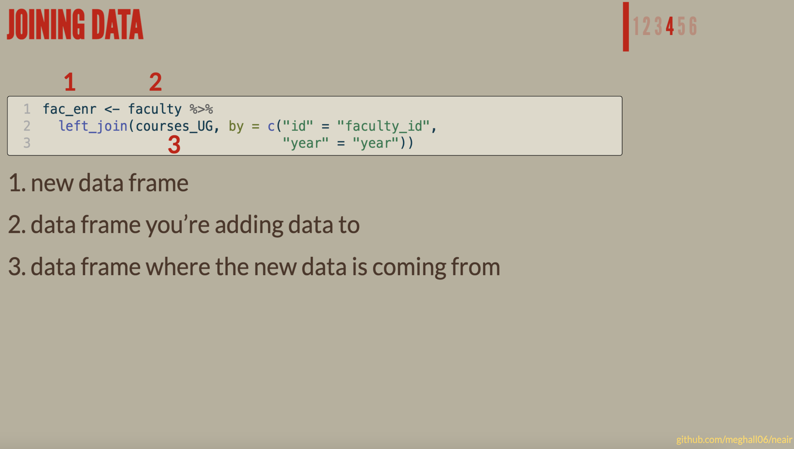
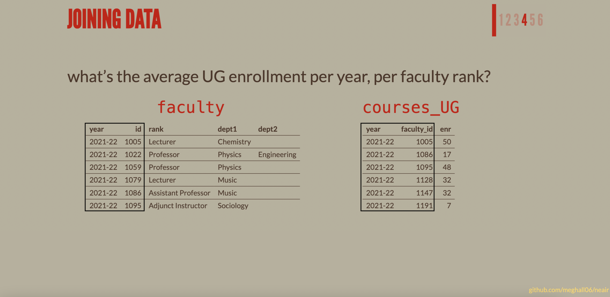
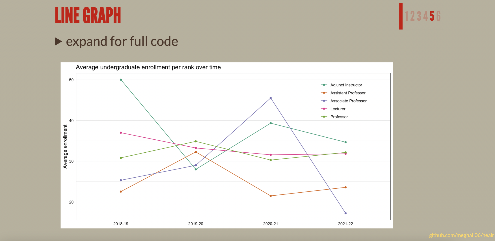
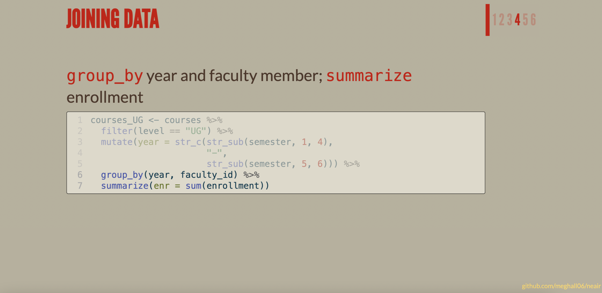

Quarto is a new open-source technical publishing system from RStudio. It is similar in many ways to R Markdown (which isn’t going away, don’t worry!), except that it doesn’t require R, supports more languages, and combines the functionality of many R Markdown packages (e.g., xaringan, bookdown).
I am a devoted R Markdown user, but I want to start exploring the new Quarto features. My first project was slides for a workshop—I would normally use the R Markdown-backed xaringan for HTML presentations, but I decided to try out the Quarto alternative, which uses reveal.js.
The slides I made with Quarto are here, and the code is on GitHub here.
A lot of the functionality is similar to using xaringan or other similar R Markdown HTML formats, but there’s lots of new syntax to learn (as well as plenty of new features!), so I put this post together to compile a few things I learned while making a Quarto presentation for the first time.
Quarto resources
My favorite introduction to the publishing system itself is Alison Hill’s comprehensive post. Mine Çetinkaya-Rundel also has an ongoing blog with a new Quarto tip each day.
First things first—how to use emojis in Quarto?? Thankfully, this was an easy one. By adding the following line to your YAML:
---from: markdown+emoji---
You can reference emojis in text by writing :wave: to get 👋. The full list of emoji codes is available here.
(This is a good list of what overall YAML options are available.)
Custom elements
There are built-in presentation themes within Quarto, and just like with xaringan, you have the option to customize one of the provided themes or completely build your own. To do so, create a custom.scss file and reference it in your YAML:
---format:revealjs:theme:[moon, custom.scss]---
My custom.scss file that I used for my slides is here, and in addition to some “common” customizations like specifying background color, font color, link color, etc., there were a few specific aspects I wanted to change or add.
Code block appearance
By default, code blocks in Quarto have the same background color as the slides themselves, with a lightened border (all of the default elements are listed here). I wanted a lighter background for my code block, with a dark border, so I made the following changes to my .scss file:
The default footer in Quarto reveal.js slides has text centered at the bottom of the page, but I wanted my footer to have smaller text that was aligned to the right. This seemed to be a very simple customization, but tinkering with the .footer class in my .scss file was not working and I couldn’t figure out why.
Later, after I had given up 😑, I was browsing through the reveal.js GitHub issues (another technique I recommend for learning!) and happened to stumble upon one that just so happened to contain the solution to my footer problem! The default footer.css file is part of a reveal.js plugin that loads after any theme or custom files. And that’s how I learned about the !important property! Adding that property to my elements allowed me to finally edit the footer. As JJ wrote in that issue, this is “coloring outside the lines.”
The slides I developed have different sections, and I wanted to design something to sit in the top-right corner that would indicate the current section. To do so, I created a new class in my .scss file called .sectionhead.

I wish I had a more specific recommendation for learning CSS/SCSS (please share if you have a favorite resource!), but everything I’ve learned I’ve gotten through either googling or by looking through the files of other people’s work that I like. Figuring out how to do this .sectionhead was searching how to make a text box in CSS and lots of playing around with the different elements until I got something I liked.
This is very specific and random, but there is a feature in Quarto slides that fades out text on a click. It appears to fade out by ~50%, but I wanted it to fade out even more. But where do you even start in figuring out how to customize that?
To reference the feature in slides, you use .fragment.semi-fade-out. So I searched the Quarto repo for that exact string and found it here, in the main .scss file for reveal. That file provided the default syntax, which I was able to copy into my custom.scss file and then edit to make the change I wanted to the opacity.
One of the most useful features of Quarto reveal.js slides is absolute position, which allows you to specifically place elements on a slide.

I used this to place images, of course, but I also used it to annotate screenshots and code with text (like in the example above), place my .sectionhead on each slide, and in cases like the slide below, add a little outline for emphasis.

These elements can also be added as fragments, i.e., to show up on a click. The following code places those two boxes (which I created with a new .blackbox class in my .scss file) on the slide. The . . . at the top of this code chunk indicates that they appear on a click after the rest of the slide code. You could also put a . . . between those two code sections to have the boxes show up on separate clicks.
Code blocks in reveal.js allow for a lot of customizations, and these are the two I found most useful.
Code folding

For some examples while teaching, I want the code available but don’t necessarily need it all on the screen, which could be unwieldy and/or distracting. The code-fold option is great for this, as the code is only available “on demand,” and you can even specify what text should be shown next to the arrow. The code below shows the code-fold and code-summary options in use.
Side note: I like how the chunk options here are in the chunk itself, preceded by #|, instead of in the {r} brackets—it’s much more readable.
expand for full code
```{r}#| code-fold: true#| code-summary: "expand for full code"#| fig-align: "center"fac_enr %>% filter(!is.na(avg_enr)) %>% ggplot(aes(x = year, y = avg_enr, group = rank, color = rank)) + geom_line() + geom_point() + scale_color_brewer(type = "qual", palette = "Dark2") + labs(x = NULL, y = "Average enrollment", title = "Average undergraduate enrollment per rank over time") + theme_linedraw() + theme(panel.grid.major.x = element_blank(), axis.ticks = element_blank(), legend.title = element_blank(), legend.background = element_rect(fill = NA), legend.key = element_rect(fill = NA), legend.position = c(0.85, 0.82))```
Incremental code highlighting

Code highlighting isn’t a new feature in and of itself (you could definitely highlight code lines in xaringan), but here it’s very easy to “step through” code by highlighting various lines on a click. This is super useful for focusing attention during teaching and explaining code line-by-line.
The following option would start by highlighting lines 1 and 2 of the code block, then line 3 on a click, then line 4 on a click: #| code-line-numbers: "1-2|3|4"
Styling text
Figuring out how to style text was a bit of a learning curve for me—not because it’s difficult, it’s just different from xaringan and I couldn’t find it well-explained in the docs (though the docs are so comprehensive, I probably just missed it somewhere). The code for the demo presentation was useful for picking up some styling examples. My best overall tip is to keep up with other people’s work and when you spot something you like, find the GitHub file and figure out how they did it!
In-line
If you want, for example, red words, you’d type [red words]{style="color:#cc0000"}.
Larger chunks
If instead you wanted to adjust the style of a larger chunk of text, indicate the section with ::: (which needs to be echoed at the end) and use the same {style} syntax.